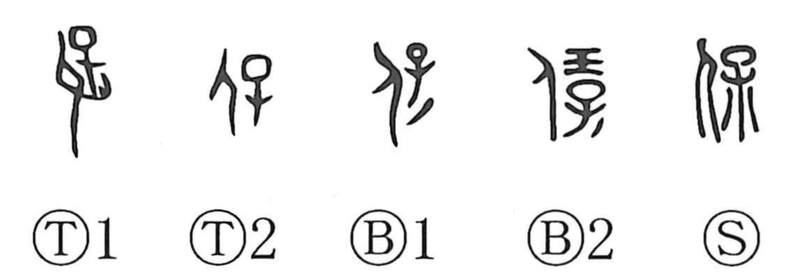

Explanation
保 combines a person with a child and the child’s wrapping cloth, 褓. The early forms show the infant being carried, sometimes held in the arms and sometimes on the back. The cloth is the newborn’s first garment, prepared to receive an ancestral spirit and protect that spirit within the child.
保 names the rite of bestowing and preserving this spiritual life. Some bronze forms also add jade, another implement used to quicken the spirit. From receiving the spirit and keeping it safe come ‘preserve,’ ‘protect,’ ‘support,’ and ‘bring to security.’
保 could also name the priest responsible for such rites. The high official called 大保 oversaw the royal succession ceremony, in which the new king received the spirit appropriate to his position. Protection here begins with keeping an imparted life or power intact.